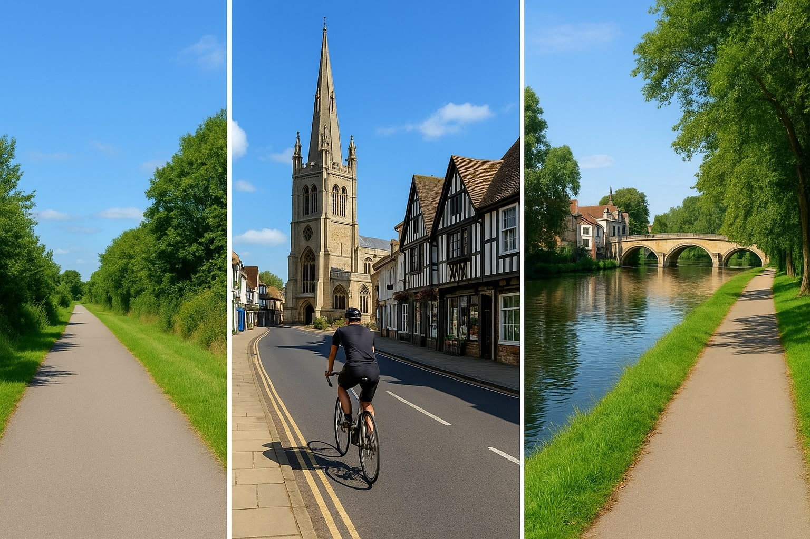
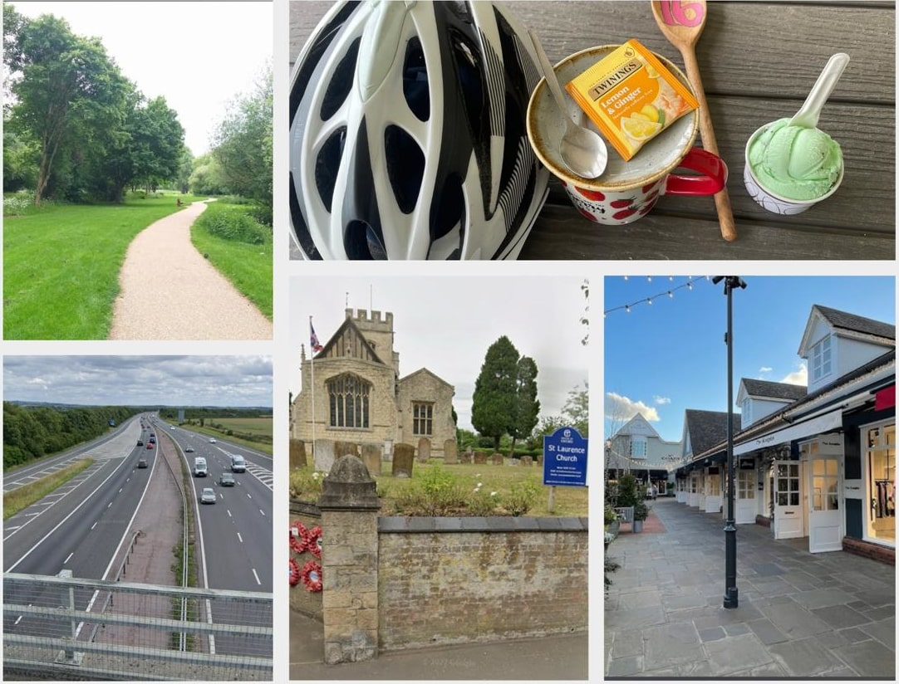
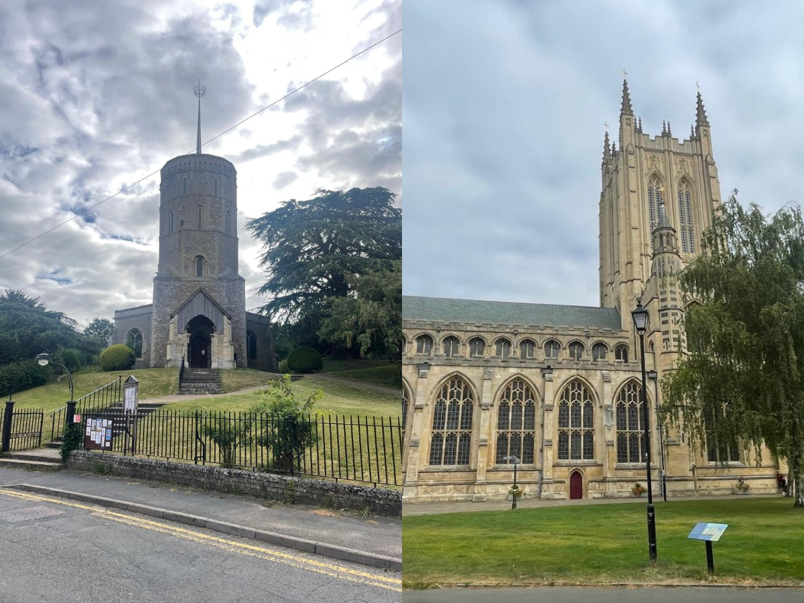
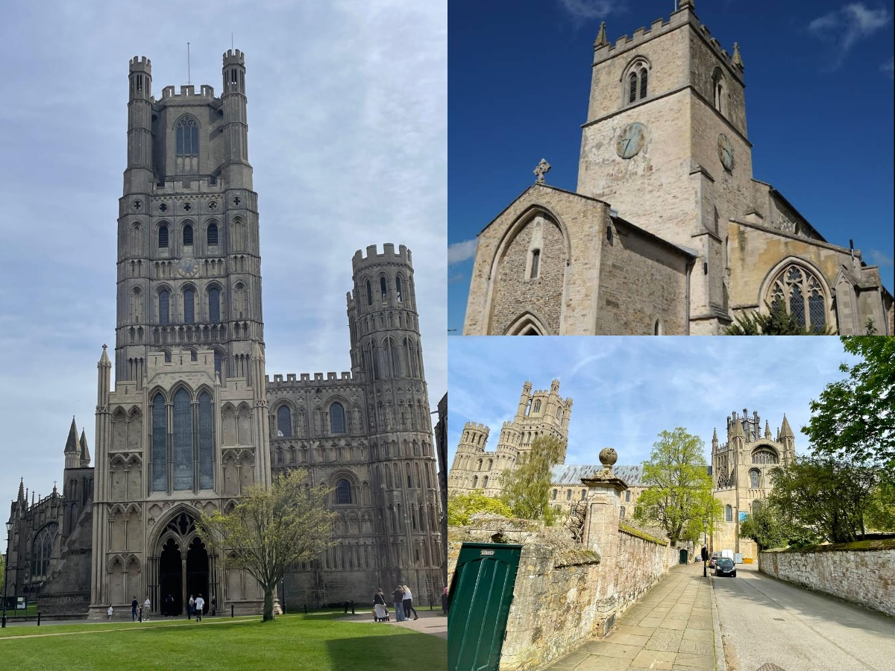
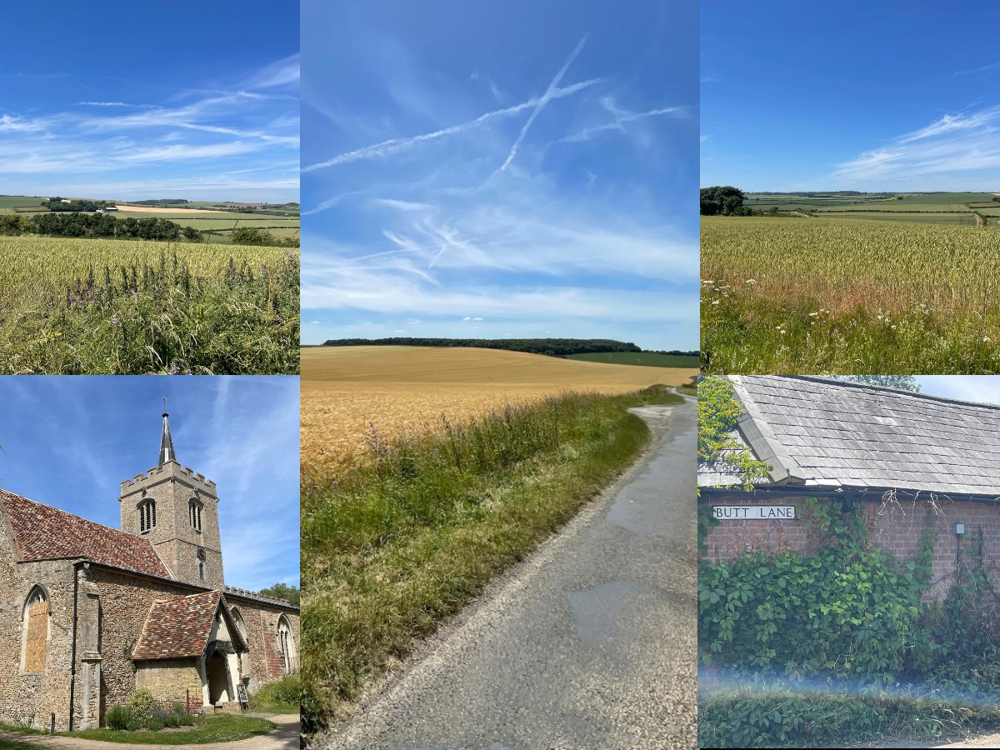

Preface:The gently rolling landscape around Cambridge, combined with a network of quiet A and B roads and the abundance of picturesque towns and villages scattered throughout East Anglia, makes this region ideal for cycle touring. I usually follow routes from the Sustrans National Cycle Network (NCN), as they are well signposted, largely free of heavy traffic, and often pass through charming town centres and local farm shops—making the journey both scenic and enjoyable. Most importantly, simply following the NCN markers and signs all along the way eliminates the need for very detailed route planning, removes the stress of constantly checking maps and allows me to enjoy the ride without worrying about navigation.
Transport:Most of my rides typically span ~100 ±20 kilometers, making them ideal for day rides over a weekend. I’m based in Cambridge, so if it’s not a round trip, I usually take the train back. If I’m starting from a different location, I take a train from Cambridge to the starting point, cycle to the destination, and then return by train. I prefer to ride on Saturdays, as train services tend to run like they do on weekdays. Sundays, on the other hand, are less reliable—with reduced schedules, delays, cancellations, or even dreaded rail replacement buses that don’t accommodate bicycles. Local bus services like Stagecoach also don’t accept bikes onboard, unless it’s a foldable one. I keep things simple by packing light—just the essentials, such as water and a few snacks—and I usually plan a couple of scenic stops along the way to refuel and soak in the surroundings.
**Tip:** Whenever possible, take trains heading north, away from London. They're usually less crowded, so even without a bicycle reservation, you’ll have a better chance of fitting your bike on board.
UPDATE: Starting with Ride 8, I’ve bought a rear-mounted bike rack to my car, so I can head out whenever I like. For point-to-point rides, though, I still use trains to get back to the starting point.
Routes
Below, are a selection of routes I’ve taken, along with my personal experiences, highlights from the journeys, and practical tips to help you plan your own cycle adventures around this part of England.
1. Cambridge to Ipswitch (NCN 51)
2. Cambridge to Bedford (NCN 51)
3. Oxford to Milton Keynes (NCN 51)
4. Cambridge to Thetford (NCN 51,13)
5. Colchester to Bury St Edmunds (NCN 13)
6. Cambridge to King's Lynn (NCN 11)
7. Cambridge to Stansted and back (NCN 11)
8. Ipswitch to Chelmsford (NCN 1)
9. Ipswitch to Colchester (NCN 51)
Cambridge to Ipswitch - NCN 51
Transport: Direct train Ipswitch -> Cambridge (Greater Anglia)
The ride kicks off with an easy, mostly flat stretch as you depart from Cambridge. The notable stop is Newmarket, a town steeped in horse racing history, where the route passes several impressive racecourses. From there, the path continues to the historic town of Bury St Edmunds. With its stunning Abbey ruins and the impressive St Edmundsbury Cathedral, it’s a perfect spot for some photos — and a well-earned coffee break.
Some highlights include the scenic farmland and wooded paths near Ickworth Park and gentle climbs with great views around Needham Market. Surfaces are mostly tarmac and gravel; however, watch for rougher patches between Thurston and Stowmarket, especially after rain. While most of the route is quiet, some sections near Newmarket and Ipswich involve busier roads, so caution is needed around traffic pinch points. The route arrives into Ipswitch riding along the River Orwell banks.

Cambridge to Bedford - NCN 51
Transport: Train via London. Bedford -> King's Cross (Greater Northern);
St Pancras International -> Cambridge (EMR, ThamesLink)
The butter smooth path along the Guided Busway as you set off from Cambridge till St Ives is perfect for fast, focused riding—I've hammered it back and forth many times. From there, things get more relaxed as the route winds through villages and quiet lanes. A stop at Grafham Water makes a good spot for a sandwich break with great views. Between Huntingdon and Bedford, NCN 51 and 12 run together for a while, so keep an eye on the signs. After Great Barford, they split—NCN 12 heads south, NCN 51 goes west (I missed that once and added a few bonus miles). The scenery stays lovely through to Bedford, with rolling countryside and peaceful river crossings. It rained twice during this ride, which made things soggy but manageable with the right gear. Honestly, riding wet isn’t my favorite, but the route still made up for it. Overall, it’s a great day out on the bike—fast in places, scenic throughout, and with just enough navigation to keep things interesting.
Remember to stay alert at route junctions and to prepare for changing weather conditions to make the most of this delightful journey.
There are no direct trains from Bedford back to Cambridge, so you’ll need to go via London and switch lines—turning the return journey into a 2+ hour slog, which isn’t exactly what you want after knocking out a 100km ride.

Oxford to Milton Keynes - NCN 51
Transport: Mounted cycle on the car, drove to Milton Keynes, parked at the station.
Train Milton Keynes -> Oxford, via Coventry (ticket cost ~£50).
Note Stagecoach bus X5, 905 between Oxford and Cambridge does not allow cycles onboard.
There are no public transport options for bringing a bike from Cambridge to this section of NCN 51 (Varsity Way). As of this writing, the East West Rail project connecting Oxford and Cambridge is still incomplete. The train journey from Milton Keynes to Oxford via Coventry takes nearly two hours (costing £50), which meant I didn’t start riding from Oxford until almost midday—despite leaving Cambridge at 9 a.m. Be sure to reserve a bike slot in advance, as train are busy and staff are strict and will check your cycle ticket reservation before boarding.
The ride start off weaving through the city's academic ambiance before transitioning into the serene countryside beyond Kidlington.
Onwards the route guides you through picturesque villages like Bletchingdon, Wendlebury, Bicester, where I had a brief stop in a quite park near Bicester Village for a sandwich break.
Continuing on, the path meanders through Twyford and Winslow. A notable highlight is the Mursley Farm Shop where I indulged in some local cake and ice cream.
Approaching Milton Keynes, the landscape shifts to the city's innovative redway system—a network of over 200 miles of shared-use paths for cyclists and pedestrians. This segment offers a leisurely ride past Furzton Lake and Teardrop Lakes, ending near the central train station.

Cambidge to Thetford - NCN 51 + NCN 13
Route: NCN 51 Cambridge to Bury St Edmunds, NCN 13 Bury St Edmunds to Thedford
Transport: Direct train Thetford -> Cambridge (Greater Anglia)
This ride kicks off along the familiar NCN 51, heading east out of Cambridge toward Bury St Edmunds—a stretch I’ve done before on the way to Ipswich. It’s a scenic and relatively quiet route, weaving through classic English countryside. By the time I rolled into Bury, I’d knocked out just about half the distance.
From there, the ride takes a northern turn, and the landscape shifts. You start winding through sleepy Suffolk villages, each with its own charm. Around Honington, I got a surprise highlight—RAF activity overhead from the nearby station base! If you're lucky, you might catch a similar sight—it's a pretty surreal experience on a quiet village road.
I’d packed some pasta for lunch (carbs, always), and planned to stop in a park somewhere, but nothing turned up at the right time. Instead, I took a break on a shaded patch of sidewalk in the little village of Coney Weston. As I was tucking in, a kind family noticed me and came over with a folding chair and a bottle of cold water. It was one of those small but memorable moments of generosity that just adds warmth to the journey.
The final leg into Thetford is easily the best stretch of the ride. The last 20–25 km carve through Thetford Forest, and the roads there are pure joy—smooth, shaded, and quiet. It’s the kind of surface that invites rhythm, where you can just zone in and pedal without distraction. After the open countryside and village roads, this forest stretch feels almost meditative.
All in all, it’s a ride that has a bit of everything—good roads, interesting sights, random acts of kindness, and a strong finish.

Colchester to Bury St Edmunds - NCN 13
Transport: Train Cambridge -> Colchester, via Ipswitch (Greater Anglia)
Bury St Edmunds -> Cambridge (Greater Anglia)
In my previous ride, I cycled north from Bury St Edmunds towards Thetford. For this stretch I decided to explore the south side of NCN 13 from Bury St. Edmunds.
I took a train down to Colchester but having narrowly missed the first train out, meant a late start. A leisurely phone catch-up with family followed, while waiting for the next train at the station.
Rolling out of Colchester just after noon, I followed NCN 13 east before tucking alongside the tranquil River Stour near Bures and gliding past the pastel cottages of Long Melford. Quiet lanes stitched together Suffolk’s picture-book villages, each bend revealing orchards, church towers, and endless hedgerows. I paused at a sun-dappled riverside bench for a snack and watched swans drift by, the only sounds birdsong and gentle lapping water. A few sharp ramps kept the legs honest—573 m of climbing in all—yet the 71 km route flowed so smoothly that Bury St Edmunds’ abbey gate arrived sooner than expected. Along the way, I admired weathered flint walls and the odd thatched cottage, imagining the centuries of travelers who passed the same way. By the time I rolled into the market square, the fading afternoon light gilded the abbey ruins in gold—coffee-fuelled, soul-filled, and already plotting the northern leg to Thetford, I logged another perfect day in the saddle. The crisp autumn air felt worth it, despite the delayed start.
Cambridge to King's Lynn - NCN 11
Transport: Train King's Lynn -> Cambridge (Great Nothern)
The ride unfolds across a wonderfully scenic, flat landscape, where endless skies meet patchwork fields and winding waterways.
Starting in Cambridge, you’ll thread through the city’s famed King’s College Chapel, along Jesus Green, and over quiet towpaths that trace the River Cam.
Near Fen Ditton, the path leaves the banks of the River Cam and heads east toward Bottisham, where it then turns north.
On route, Wicken Fen provides a verdant oasis of reeds, marsh harriers, and waterfowl—perfect for a contemplative pause among the wildlife.
The highlight of the journey is Ely, where the soaring silhouette of Ely Cathedral—known as the “Ship of the Fens”—dominates the horizon and beckons exploration of the island town’s medieval streets.
Leaving Ely, the route threads through Downham Market’s charming riverside lanes before skirting the River Ouse en route to King’s Lynn.
Finishing at King’s Lynn, you arrive in one of England’s finest remaining Hanseatic ports, its historic quayside architecture a fitting finale to the ride.
Through flat trails, rustic villages, and historic landmarks, NCN 11 delivers a serene, scenic cycling experience ideal for for someone looking to foray into bicycle touring.

Cambridge to Stansted and back - NCN 11
Transport: Round trip
Back in the masked-up days of 2020 I relied on out-and-back rides to avoid trains. I dusted off that habit for a 90 km spin from Cambridge to Stansted Mountfitchet and back—and rediscovered the little mind games that make a repeat route feel fresh.
I would play memorize and tick off the landmarks on the return ride, in reverse order. The exercise keeps boredom at bay and, oddly, makes the kilometres feel shorter.
The “DNA Path” at Addenbrooke’s, just outside the city, offers a playful tribute to human genetics before you glide into the vast, open farms.
I was quite familiar with the cycleway till Sawston and this let me warm up on traffic-free tarmac before I slipped past my usual turn-offs without a glance.
The route has mostly smooth lane or dedicated path; a couple of pothole-ridden farm tracks south of Sawston.
From Whittlesford to Ickleton flint-faced medieval churches pop up every few kilometres, perfect “mental markers” to reorder on the return leg.
Coploe Hill delivers the sharpest ramp of the day, but it’s mercifully short and rewards with a hawk-eye view over cabbage fields that dot the Cambridgeshire–Essex border.
Road signs swap village names for runway numbers as you freewheel toward Stansted airport northern perimeter. A grassy verge on Claypit Hill lets you watch planes float just metres away—silver bellies against blue sky and green crops. I paused briefly in Mountfitchet’s timber-framed high street for sandwich and coffee, reset the lap timer, and swung the bike back north.

Ipswitch to Chelmsford- NCN 1
Transport: Mounted cycle on the car, drove to Chelmsford, parked at the station.
Train Chelmsford -> Ipswitch (Greater Anglia).
The path stitched together Suffolk’s quiet lanes with Essex’s estuaries that kept me switching gears.
Fast, flowing back-roads where you can drop into the groove, spin a steady cadence for ~10 km chunks before the scenery changes.
Short off-road stretches of gravel threaded through parks and tree-lined cut-throughs. Expect exposed roots, loose stone and the odd squirrel and duck sprint.
Skirts the rim of Dedham Vale AONB—teasing river-meadow views without the full detour into Constable Country.
Colchester (≈50km) was an ideal halfway breather. I grabbed a bench, patched a few scratches from an earlier photo-op tumble (pro tip: stop before shooting), inhaled a sandwich and filled bottles.
Signage around towns can vanish when you need it most; keep your GPS or phone map handy to hop back on track.
Rolling profile: a saw-tooth of short climbs and quick drops, punctuated by sharp turns that keep you honest.
Heybridge Basin (≈85 km): Café cluster on the waterfront—perfect for coffee, cake or a victory ice-cream while boats lock through to the river.
Final leg snakes quietly into Chelmsford, trading coastal air for cathedral spires and an easy roll to the station.
It’s a ride that rewards tempo on the tarmac and patience in the dirt, with enough pit-stops to keep spirits (and sugar levels) high. Sleek, varied and eminently doable in a day.
Ipswitch to Colchester - NCN 51
Transport: Mounted cycle on the car, drove to Colchester, parked at the station.
Train Colchester -> Ipswitch (Greater Anglia). (When possible take trains going north, away from London. They're almost always less crowded.)
One of the reasons I chose this route was the chance to take the Harwich ferry across the water—a unique highlight that sets this ride apart from most others. I was especially eager to see what that experience would be like.
The ride began at Ipswich Station, with the route initially hugging the banks of the River Orwell before weaving through the town’s outskirts—Gainsborough, Ravenswood. This stretch of NCN 51 isn’t particularly well-signposted, so it’s wise to keep your map or GPS handy.
Once out of Ipswich, the path straightens out, and the roads open up to a more relaxed countryside setting. Reaching Felixstowe offers a great opportunity to rest and refuel, whether on the bustling High Street or down by the beachfront. I opted to ride straight to the Harwich ferry port and stopped at the View Point Café for a slice of cake and a coffee. It was a windy day, the water choppy, and the tiny ferry bobbed and splashed as it made its short crossing - an interesting experience indeed.
Despite Harwich being visible just across the water, the ferry ride adds a sense of novelty and adventure that makes this route special.
Once I landed in Harwich, the path picked up in quality—smooth, well-marked, and winding through a series of picturesque villages. The ride through this section was fast and enjoyable. Nearing Wivenhoe, the trail shifts to a gravel surface that runs along the River Colne. Despite being unpaved, it remains smooth and very rideable.
As you enter Colchester, the path becomes paved again, meandering through several green parks before connecting with NCN 1, wrapping up a memorable and varied day on two wheels.
P.S: I am using this blog post like a diary, updating it as I complete new routes (see last updated above).